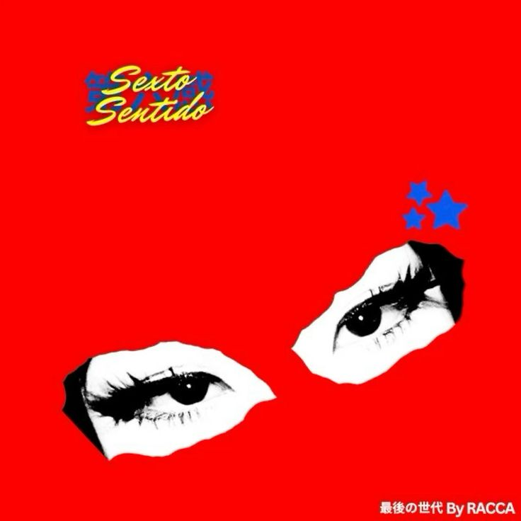

Yo, yo
Yo, yo, ja, ja
No tengo que mencionar tu nombre para que sepas quién eres
The motherfucking RACCA en el micro, ja
La última generación
Yo
Nena, me siento perdido
Tengo una brújula que me lleva directo a encontrarte
En tu voz un arrullo sonido
Cora-corazón, te lo pido, ¿me dejarás amarte?
Tu nombre, mi sexto sentido
Mujer, ¿qué has hecho? Me dejaste viendo todo nublao
Hasta ahora creo que nunca he querido
Contigo me di cuenta en verdad qué es estar enamorao (yo, yo, yo)
El karma me estaba jodiendo y, de repente, llegaste
Te miré y solo pensé en cómo podría acercarme
Al final, no soy muy bueno en esto como pa enamorarte
Pero quiero saber tu nombre y dónde puedo encontrarte
Vivo muy cerca y es raro no haberte visto por aquí
Dime, ¿qué estás haciendo? Nena, cuéntame de ti
¿Cuáles son tus pasatiempos? Dime, ¿qué te hace feliz?
Entendí tu humor cuando un chiste mío te hizo reír
De mí no hay mucho que hablar, tengo sueños y un rumbo fijo
Algunas cicatrices y un criterio no muy prolijo
Me gusta salir de noche y trabajar pa mi disco
Me gané todo lo que tengo, aunque nunca fui muy listo
Pero no hablemos de mí, quiero saber si estás libre
Podríamos salir un día a platicar, si te sirve
Salir a patinar y caminar en el parque
No soy muy bueno en casi nada, pero puedo enseñarte (ja, ja)
Nena, me siento perdido
Tengo una brújula que me lleva directo a encontrarte
En tu voz un arrullo sonido
Cora-corazón, te lo pido, ¿me dejarás amarte?
Tu nombre, mi sexto sentido
Mujer, ¿qué has hecho? Me dejaste viendo todo nublao
Hasta ahora creo que nunca he querido
Contigo me di cuenta en verdad qué es estar enamorao
Corro a ver mi celular cuando escucho un mensaje
Pensando que será uno tuyo
Cuento los días en ocho para verte
No me importa si es tan solo un segundo
Puede que pasen los días, los meses, los años
Pero en esa fila me incluyo
No puedo evitar sonrojarme
Si pienso en que tan cerca estamos de coincidir tú y yo
Eres tan linda como un suspiro del mar
En tus ojos se halla la luz de mi oscuridad
Tú eres el lado opuesto de mi imán
¿Dónde estabas, girl? ¿Dónde estabas, girl?
Eres tan linda como un suspiro de mar
En tus ojos se halla la luz de mi oscuridad
Eres el lado opuesto de mi imán
¿Dónde estabas, girl? ¿Dónde estabas, girl?
Dame tu mano y corramos tan rápido
Que los problemas jamás nos alcancen
Y que si uno nos toma por sorpresa
Vayamo a la pieza y no le demos chance
Quiero recorrer el mundo a tu lado
Y explorar cada fondo hasta nuestro alcance
Quiero decir que te quiero
Y lo único que quiero en este momento es besarte
Nena, me siento perdido
Tengo una brújula que me lleva directo a encontrarte
En tu voz un arrullo sonido
Cora-corazón, te lo pido, ¿me dejarás amarte?
Tu nombre, mi sexto sentido
Mujer, ¿qué has hecho? Me dejaste viendo todo nublao
Hasta ahora creo que nunca he querido
Contigo me di cuenta en verdad qué es estar enamorao
